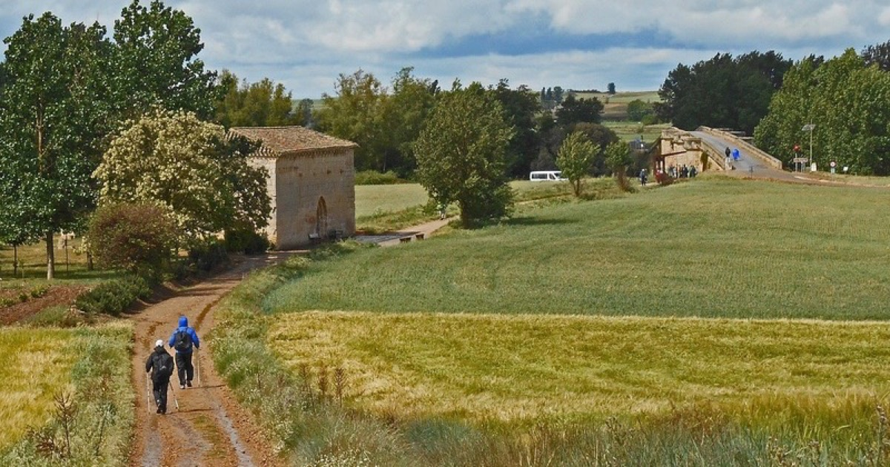

Sara · Easy Camino Santiago
Your English Way expert
Free call back?
Leave your number and we'll call you within 24h to advise you with no obligation.
Your number will only be used to call you. No spam.
Your English Way expert
Leave your number and we'll call you within 24h to advise you with no obligation.
Your number will only be used to call you. No spam.

The historic seafarers' route. 119km, 6 stages from Ferrol to Santiago de Compostela. Compostela guaranteed. From €349 · Easy level · No heavy pack.
The historic seafarers' route from Ferrol to Santiago de Compostela.
Long before the modern Camino boom, medieval pilgrims from England, Ireland, Flanders and Scandinavia had their own way to reach Santiago de Compostela. They boarded ships, crossed the Bay of Biscay and arrived in the Galician ports of Ferrol or A Coruña. From there they walked the remaining distance on what became known as the English Way — Camino Inglés.
Today the English Way from Ferrol covers 119 kilometres in 6 stages. It is one of the shortest official routes that still grants the Compostela, because it exceeds the 100km minimum required for the official pilgrim certificate. It winds through coastal estuaries, medieval towns and Galician countryside before entering the city of Santiago de Compostela.
The route is rated Easy: stages are short (14–25km), the terrain is mostly gentle and well signposted, and there are no high mountain passes. It is an excellent choice for first-time pilgrims, those with limited time, or anyone looking for a complete but approachable Camino experience.
Easy Camino Santiago organises your entire English Way from Ferrol: accommodation, daily luggage transfer, pilgrim passport and full support throughout. You just need to walk.
The 119km from Ferrol exceeds the 100km minimum required by the Cathedral of Santiago to obtain the official Compostela.
Coastal estuaries, medieval towns like Betanzos and Pontedeume, and Galician countryside make this route uniquely scenic.
Short stages of 14–25km, no high mountain passes, excellent signage and services along the entire route.
Perfect for a week's holiday. Walk the Camino and return home with the Compostela in hand.
Far less crowded than the Sarria–Santiago section, yet with all the pilgrim infrastructure and the same warm Galician welcome.
From €349 per person, all inclusive. A complete organised Camino at an accessible price.
Six manageable stages connect the port city of Ferrol with the Cathedral of Santiago
A short opening stage that leaves the naval city of Ferrol and follows the Ría de Ferrol estuary towards Neda. A gentle warm-up with beautiful coastal views. You receive your pilgrim passport (credencial) at the start.
The longest stage of the route leads through forests and small villages to Pontedeume, a charming medieval town at the mouth of the Eume river. The historic centre and the 14th-century bridge make a memorable arrival.
A short and pleasant stage ending in Betanzos, one of the best-preserved medieval towns in Galicia. The Gothic churches of San Francisco and Santa María do Azougue are not to be missed.
The route leaves the coast behind and heads inland through eucalyptus and oak forests. This is the most demanding stage, but the green Galician landscape and quiet rural paths make it very rewarding.
A comfortable stage through Galician villages and farmland, descending gradually towards Sigueiro on the banks of the Tambre river. The penultimate day before the great finale.
The final stage: the route joins the French Way at Monte do Gozo, the historic hill from which pilgrims have caught their first glimpse of the Cathedral towers for centuries. Entering the old city of Santiago and reaching the Plaza del Obradoiro is an emotion like no other.
All inclusive. Choose your preferred accommodation type.
Comfort upgrade with 3-star hotels and charming rural houses for a more relaxed experience after each stage.
✓ Prices per person · ✓ Single supplement on request · ✓ Groups of 6+: special price.
📅 Book with just 20%. Balance due before the trip starts. See cancellation terms.
Everything you need to complete the English Way without worries.
We select the best guesthouses or hotels at each stage of the English Way. Everything confirmed before you set off.
Your luggage travels each day to the next accommodation. Walk freely with just a small day pack. Service across all 6 stages.
Official credencial del peregrino sent before your departure. Collect stamps at churches, cafés and albergues along the way.
Digital route file compatible with all GPS devices and apps. Detailed waypoints for every stage so you never get lost.
Sara and our team available throughout the Camino. For any unexpected issue, question or last-minute change of plan.
We guide you through the process of obtaining your Compostela at the Pilgrim Office in Santiago de Compostela.
Not included: Flights/transport to Ferrol, meals (except where noted), optional activities. Ferrol is connected by train and bus from A Coruña (approx. 1 hour).
Everything you need to know before walking the English Way
6 stages, 119km and the Compostela at the end. Sara will call you within 24h.
Request free quote →Or call us directly: 982 907 629